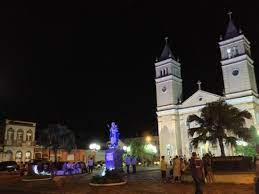
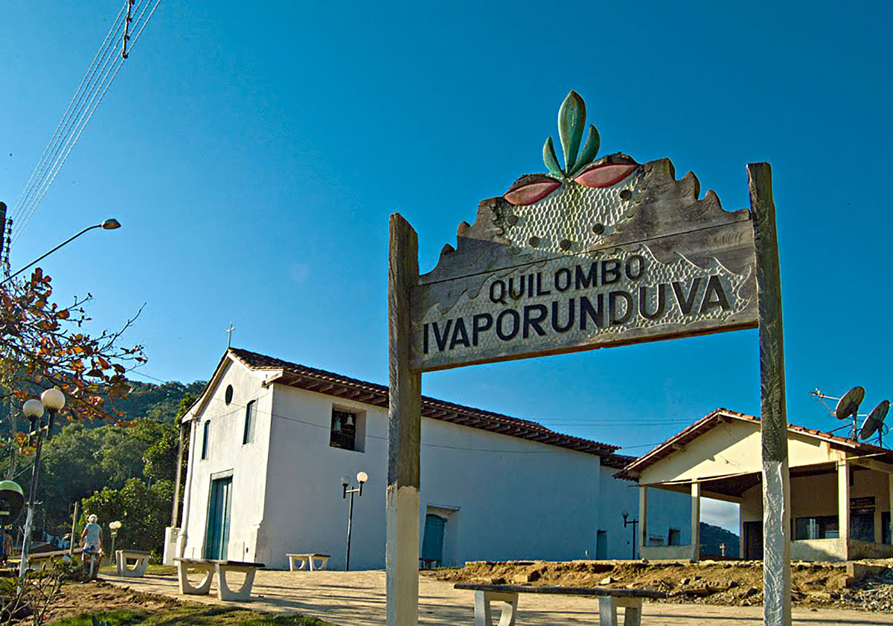

LUGARES TURISTICO
Praça Nossa Senhora da Guia

Descubra uma infinidade de empresas em Praça Praça Nossa Senhora da Guia, Eldorado, São Paulo, juntamente com informações sobre seus endereços e CEPS.
Também encontramos a Banco Santander (Brasil) que oferece contas correntes, empréstimos,
contas poupança e muito mais, empréstimos para ajudar a realizar seus sonhos, empréstimos para pequenas empresas
Quilombo

Na chegada ao Quilombo, ocorre recepção na comunidade por monitores locais e diversas atividades:
palestra com liderança quilombola (história da formação do quilombo, lutas, conquistas e resistência) ; oficinas temáticas de caça e pesca, artesanato;
farmácia viva; agricultura de subsistência; bananal orgânico; viveiro de mudas nativas; garimpo do ouro;
gastronomia local; vivência com uma família quilombola; contação de histórias, lendas e causos locais; tutuca de pilão;
tráfico de farinha de mandioca; atividade simbólica e confraternização com plantio de árvores nativas e fechamento das atividades.
O quilombo do Ivaporunduva é a comunidade tradicional mais antiga do Vale do Ribeira.
Ela possui cerca de 3 158,11 ha (hectares) de extensão e 80% de sua área ainda é coberta por Mata Atlântica.
Eles sobrevivem principalmente através do cultivo de roça: arroz, mandioca, milho, feijão, verduras e legumes para uso próprio,
já a sua renda é obtida principalmente através da produção de banana orgânica, artesanato e turismo.
A maioria das casas é feita de alvenaria onde algumas delas mantém a tradição original sendo feitas de pau-a-pique.
Os quintais das casas chegam a medir em media 250 metros quadrados e neles
são cultivados plantas frutíferas (laranja, abacate, limão, banana, etc), hortaliças e plantas medicinais.